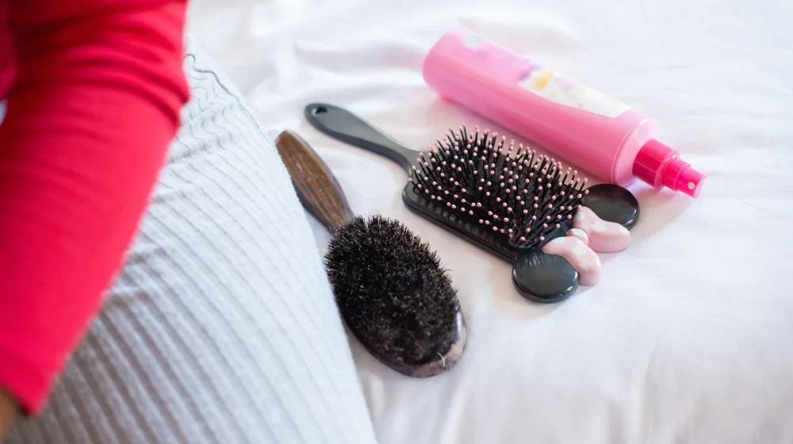
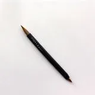

상한 머리 자르지 마세요: 일상에서 실천하는 4가지 모발 복구 습관
사진: Beyzanur K. / Pexels (무료 이미지, 출처 표기)
1. 내 모발의 손상도 자가 진단 테스트

푸석하고 갈라지는 머리카락 때문에 스트레스를 받고 계시나요? 한 번 상한 모발은 스스로 회복되는 자생력이 없기 때문에 일상적인 예방과 관리가 무엇보다 중요합니다. 관리법을 알아보기 전에 먼저 내 머릿결 상태를 객관적으로 파악해야 합니다.
아래 체크리스트 중 자신이 해당하는 항목이 몇 개인지 확인해 보세요.
- 머리를 감을 때 모발이 엉켜 손가락이 잘 빠져나가지 않는다.
- 모발 끝이 빗자루처럼 갈라지거나 하얗게 일어난 부분이 보인다.
- 드라이어로 말리는 시간이 예전보다 훨씬 오래 걸린다.
- 젖은 상태에서 모발을 당겼을 때 고무줄처럼 늘어나다가 툭 끊어진다.
이 중 2개 이상 해당한다면 모발 내부의 단백질과 수분이 많이 빠져나간 '손상모' 상태입니다. 지금부터 소개하는 단계별 케어법을 일상에 적용해 보세요.
2. 손상을 반으로 줄이는 올바른 샴푸 단계
대부분의 모발 손상은 머리를 감고 말리는 과정에서 발생합니다. 올바른 샴푸법만 익혀도 머릿결의 거친 결이 몰라보게 부드러워집니다.
- 미온수로 충분히 적시기: 샴푸를 바르기 전, 1~2분 동안 미온수로 모발과 두피를 완전히 적셔줍니다. 이 과정에서 먼지와 노폐물이 상당 부분 씻겨 나갑니다.
- 거품은 손에서 먼저 내기: 샴푸 원액을 두피에 직접 바르면 자극을 줍니다. 손바닥에서 충분히 거품을 낸 뒤 두피 위주로 마사지하듯 세정합니다.
- 손가락 끝 지문 활용하기: 손톱으로 두피를 긁으면 미세한 상처가 나 염증을 유발할 수 있습니다. 손가락 끝 패드 부분을 사용해 부드럽게 문지릅니다.
3. 트리트먼트, 린스, 헤어팩 차이점 비교
시중에는 다양한 헤어케어 제품이 나와 있어 무엇을 언제 써야 할지 헷갈리기 쉽습니다. 대한화장품협회의 가이드에 기반하여 각 제품의 역할과 올바른 사용 순서를 표로 정리했습니다.
효과를 극대화하려면 [샴푸 ➔ 헤어팩/트리트먼트 ➔ 린스] 순서로 사용해야 합니다. 트리트먼트로 내부 영양을 채운 뒤, 린스로 표면을 코팅해 영양이 빠져나가지 않도록 막아주는 원리입니다.
4. 머리 말릴 때 꼭 지켜야 할 드라이기 사용법
젖은 모발은 외부 자극에 가장 취약한 상태입니다. 수분을 머금은 모발에 고온의 열이 직접 닿으면 내부 단백질이 변형되어 쉽게 끊어지게 됩니다.
수건으로 물기를 제거할 때는 비벼 닦지 말고, 꾹꾹 눌러가며 물기를 흡수시켜 줍니다. 드라이기를 사용할 때는 바람의 방향을 위에서 아래로 향하게 하여 모발 표면의 큐티클을 차분하게 정돈해 줍니다.
마지막 1분은 반드시 찬바람으로 전환해 모발의 열감을 식혀주어야 합니다. 이 간단한 습관 하나가 모발의 수분 증발을 막고 자연스러운 윤기를 만들어 줍니다.
5. 일상 속에서 모발 손상을 유발하는 의외의 습관
열기구 사용 외에도 무심코 하는 행동들이 머릿결을 상하게 만듭니다. 가장 대표적인 것이 젖은 상태에서의 빗질입니다. 물에 젖은 모발은 탄력을 잃고 약해져 있으므로, 반드시 완전히 마른 후에 끝부분부터 살살 풀어가며 빗질해야 합니다.
외출 시 자외선 차단도 중요합니다. 피부뿐만 아니라 머리카락도 자외선에 오래 노출되면 단백질이 손상되고 건조해집니다. 햇빛이 강한 날에는 모발용 자외선 차단 스프레이를 뿌리거나 모자를 착용하는 것이 좋습니다.
상한 머릿결은 한 번에 좋아지지 않습니다. 매일 반복하는 사소한 습관들을 하나씩 바꾸어 나간다면 건강하고 찰랑이는 머릿결을 되찾을 수 있습니다. 정확한 모발 질환이나 극심한 두피 손상이 동반된다면 자가 치료에 의존하기보다 피부과 전문의의 진단을 받아보시길 권장합니다.
🔗 이 글도 함께 보면 좋아요: 체형별 옷 코디 공식: 내 몸이 예뻐 보이는 실전 체형 진단과 코디법
관련 추천 상품
이 포스팅은 쿠팡 파트너스 활동의 일환으로, 이에 따른 일정액의 수수료를 제공받습니다.
한눈에 보는 상품 목록

단백질 헤어 트리트먼트
실크 헤어 에센스 및 오일
약산성 두피 샴푸